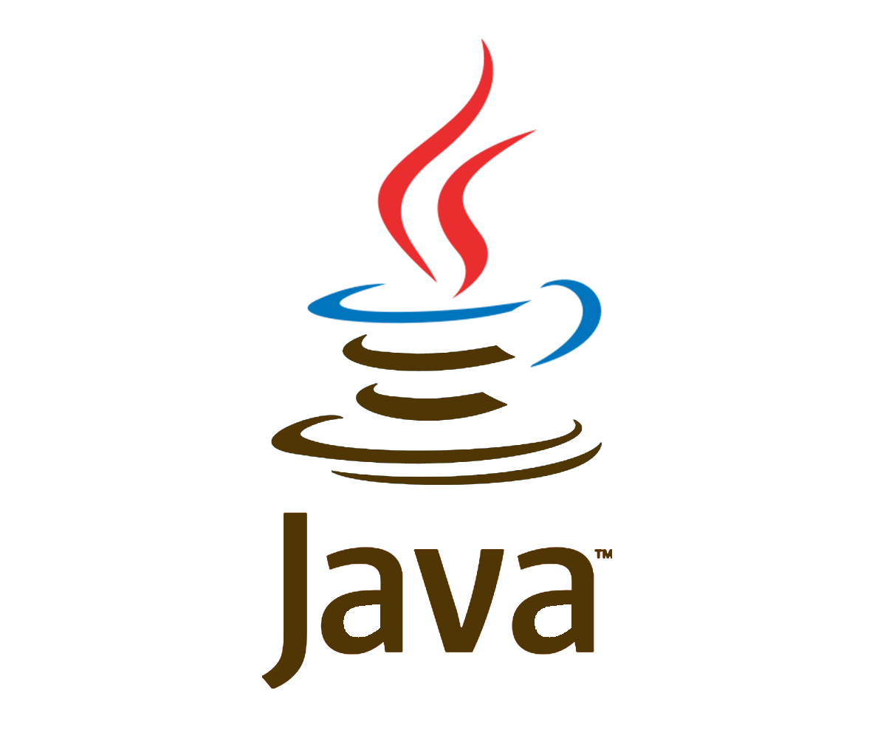
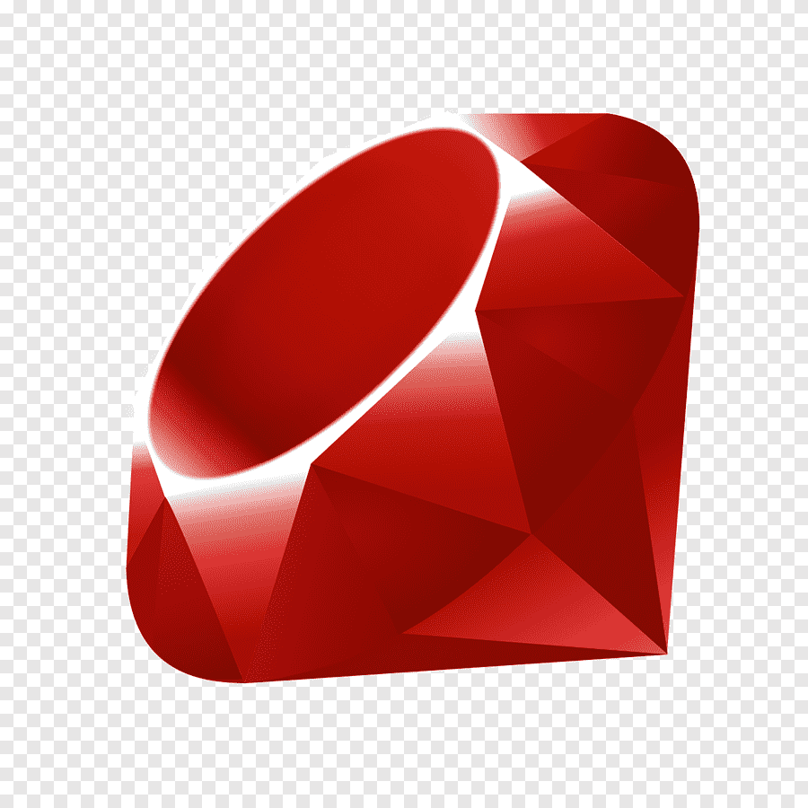

Python 
- Python был создан Гвидо ван Россумом и впервые выпущен в 1991 году.
- Python широко используется в области искусственного интеллекта, машинного обучения и науки о данных.
- Python имеет простой и понятный синтаксис, что делает его одним из самых популярных языков программирования для начинающих.
Java 
- Java была разработана компанией Sun Microsystems и выпущена в 1995 году.
- Java является одним из самых популярных языков программирования для создания корпоративных приложений и веб-серверов.
- Java использует концепцию "Write Once, Run Anywhere" (Напиши один раз, запускай везде), что позволяет программам работать на различных платформах без изменений.
PHP
- PHP (Hypertext Preprocessor) был создан Расмусом Лердорфом и выпущен в 1995 году.
- PHP широко используется для создания динамических веб-сайтов и взаимодействия с базами данных.
- PHP поддерживает множество баз данных, таких как MySQL, PostgreSQL, SQLite и другие.
Ruby 
- Ruby был создан Юкихиро Мацумото (Мац) и выпущен в 1995 году.
- Ruby часто используется для разработки веб-приложений с использованием фреймворка Ruby on Rails.
- Ruby имеет принцип "Принципы минимального удивления" (Principle of Least Surprise), что означает, что язык должен вести себя так, как ожидают пользователи.